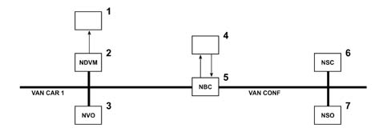
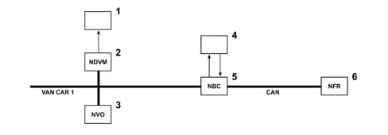
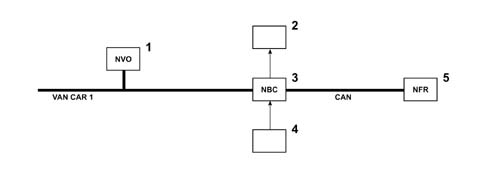
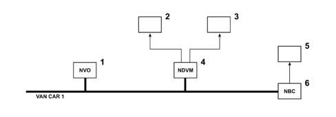
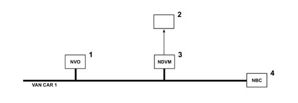

SCREEN WIPERS AND VISIBILITY
- Path
- Descriptions > 55 ELECTRICAL EQUIPMENT > 5505 INSTRUMENT/GAUGE ELECTRICAL CIRCUITS > 5505A MULTI-FUNCTION COMPONENTS > SCREEN WIPERS AND VISIBILITY
- Kind
- system description
- Applies to
- all engines; all production periods
- Interactive page
- https://sloeber94.github.io/elrnDB-fUlss/en/#/179000405
Applies to: all engines; all production periods
COMPONENTS
The windscreen wiper consists of two blades moved through a "butterfly" kinematic motion.
There is a position in which the blades can be raised to facilitate maintenance (washing the windscreen or replacing the blades). If, within 60 seconds of the key contact closing, there is an impulse on the lever that operates the windscreen wiper, the windscreen wiper blades rotate until they are in a vertical position and then stop. At this point the blades can be cleaned or, if necessary, replaced.
The windscreen wipers can only be activated with the ignition ON; like at the front, the rear blade returns to the stop position as soon as the key is switched OFF.
After the interruption of the washing control, the windscreen wiper blade completes another three strokes.
The front and rear washing functions can only be activated with the ignition ON.
The activation of the windscreen wiper functions is controlled by the steering column switch unit module.
The 5 windscreen wiper control lever positions are as follows:
- low speed,
- timed (low speed impulses),
- high speed,
- automatic intermittent,
- fixed stop
The operation of the front windscreen wiper in the AUTO position involves the automatic switching on of the dipped front headlamps.
With the wiper control lever in the intermittent position, the speed of the rear strokes is selected on the basis of the vehicle speed.
The rain sensor is fitted in the centre of the front windscreen to manage the front windscreen wiper automatically.
Automatic activation of front windscreen wiper
In the automatic wiping position, the operating speed of the front windscreen wiper varies according to the amount of water detected by the rain sensor.
The automatic mode is activated/deactivated by pressing the windscreen wiper control lever for a long time and this is signalled by a message on the multifunction screen.
Sequence of the actions:
- the NVO acquires the automatic wiper control from the position of the windscreen wiper control lever and transmits the information to the NBC via the VAN CAR1 network,
- the rain sensor is supplied by the NBC to which it transmits information relating to the presence of water on the windscreen,
- the NBC signals the move to the automatic mode towards the NDVM via the VAN CAR1 network for the activation of the windscreen wipers, towards the VAN Conf network for information to the driver.
The activation of the AUTO position produces an initialization stroke.

- 1 - Front windscreen wiper motor
- 2 - Engine Compartment Derivation Node (NDVM)
- 3 - Steering Wheel Node windscreen wiper control lever (NVO)
- 4 - Rain sensor
- 5 - Body Computer Node (NBC)
- 6 - Multifunction Screen Node (NSC)
- 7 - Milometer Warning lights Node (NSO)
Manual operation of front windscreen wiper
Sequence of the actions:
- the NVO acquires the automatic front windscreen wiper control from the position of the windscreen wiper control lever (5 possible positions) and transmits the information to the NBC via the VAN CAR1 network,
- the NBC receives the vehicle speed information from the NFR via the CAN,
- the rain sensor is supplied by the NBC to which it transmits information relating to the presence of water on the windscreen,
- on the basis of these elements, the NBC transmits the front windscreen wiper motor activation control to the NDVM via the VAN CAR 1 network,
- the NDVM activates the relays that control the front windscreen wiper motor,
- the NBC guarantees the thermal protection of the engine by means of "fixed stop" information supplied by the windscreen wiper motor.

- 1 - Front windscreen wiper motor
- 2 - Engine Compartment Derivation Node (NDVM)
- 3 - Steering Wheel Node windscreen wiper control lever (NVO)
- 4 - Rain sensor
- 5 - Body Computer Node (NBC)
- 6 - Brake Node (NFR)
Features
If the vehicle speed is below 5 km/h, the windscreen wiper intermittent speed decreases by one level, e.g. from high speed to low speed.
The initial setting level is automatically recovered when the speed of the vehicle is above 10 km/h. It is therefore possible to maintain the desired wiping speed by operating the windscreen wiper control lever.
One impulse of the windscreen wiper control lever produces:
- a single stroke of the blades,
keeping the lever towards the driver controls:
- the continuous activation of the blades,
- front windscreen washing,
- headlamp washing (if switched on).
Manual operation of rear windscreen wiper
Sequence of the actions:
- the NVO acquires the rearsreen wiper control from the position of the windscreen wiper control lever (2 possible positions: stop and rear intermittent) and transmits the information to the NBC via the VAN CAR1 network,
- the NBC receives the vehicle speed information from the NFR via the CAN and the "reverse gear engaged" information,
- on the basis of this information, the NBC manages the operation of the rearscreen wiper and controls the operation of the motor directly,
- the NBC guarantees the thermal protection of the engine by means of "fixed stop" information supplied by the windscreen wiper motor.

- 1 - Steering Wheel Node windscreen wiper control lever (NVO)
- 2 - Rearscreen wiper motor
- 3 - Body Computer Node (NBC)
- 4 - Reversing sensor
- 5 - Brake Node (NFR)
Features
The operating speed of the rearscreen wiper varies inversely according to the speed of the vehicle (as the speed of the vehicle increases, the frequency of the strokes decreases and viceversa).
The rotation of the rearscreen wiper ring nut activates the rearscreen wiper, keeping the ring nut turned, in addition to activating the rearscreen wiper also activates the rearscreen washer function.
The rearscreen wiper is automatically activated when reverse gear is engaged with the front windscreen wiper working.
Front and rear screen washing
Sequence of the actions:
- the NVO acquires the automatic headlamp washer control (rearscreen washing) from the position of the windscreen wiper control lever and transmits the information to the NBC via the VAN CAR1 network,
- the NBC transmits the two-way washing pump activating control, for washing the front or rear screen, to the NDVM,
- the NDVM controls the operation of the screen washer pump directly,
- the NBC transmits the front windscreen motor activating control to the NDVM,
- the NDVM controls the operation of the front windscreen wiper motor directly,
- the NBC controls the operation of the rearscreen wiper directly,

- 1 - Steering Wheel Node windscreen wiper control lever (NVO)
- 2 - Front windscreen wiper motor
- 3 - Two-way screen washer pump
- 4 - Engine Compartment Derivation Node (NDVM)
- 5 - Rearscreen wiper motor
- 6 - Body Computer Node (NBC)
Headlamp washing
Sequence of the actions:
- the NVO acquires the automatic headlamp washer control from the position of the windscreen wiper control lever and transmits the information to the NBC via the VAN CAR1 network,
- the NBC recognizes the state of the headlamps (lighting/signalling) and processes this information,
- the NBC transmits the headlamp washer pump activation control to the NDVM,
- The NDVM operates the headlamp washer pump directly.

- 1 - Steering Wheel Node windscreen wiper control lever (NVO)
- 2 - Headlamp washer pump
- 3 - Engine Compartment Derivation Node (NDVM)
- 4 - Body Computer Node (NBC)
Component connectors
Front windscreen wiper motor
Black 5-way connector
Pin | Function |
|---|---|
1 | Earth |
2 | Fixed stop control |
3 | not connected |
4 | Low speed control |
5 | High speed control |
Rear windscreen wiper motor
White 3-way connector
Pin | Function |
|---|---|
1 | Rear windscreen wiper motor control |
2 | Rear windscreen wiper motor fixed stop control |
3 | Earth |
Front/rear winscreen washer pump
Black 2-way connector
Pin | Function |
|---|---|
1 | Rearscreen washer pump control |
2 | Front windscreen washer pump control |
Headlamp washer pump
2-way brown connector
Pin | Function |
|---|---|
1 | Headlamp washer pump control |
2 | Earth |
Rain sensor
Black 3-way connector
Pin | Function |
|---|---|
1 | Rain sensor power supply |
2 | Electronic earth |
3 | Rain sensor input information (low speed/high speed) |
Connectors at NBC and NDVM
NBC:
Black 40-way connector
Pin | Function |
|---|---|
3 | Front windscreen wiper fixed stop control |
5 | Front windscreen wiper relay output |
White 40-way connector
Pin | Function |
|---|---|
3 | Rain sensor connection input (low speed/high speed) |
14 | Rain sensor power supply output |
40-way grey connector
Pin | Function |
|---|---|
9 | Rear windscreen wiper motor fixed stop control |
NDVM:
16-way green connector
Pin | Function |
|---|---|
6 | Headlamp washer pump control |
11 | Rearscreen washer pump control |
14 | Front windscreen washer pump control |
Recording of faults
Rain sensor: if the rain sensor detects a fault the "rain sensor fault" information is memorized by the NBC.
Steering column switch unit: if the steering wheel switch unit detects a fault the "defective switch" information is memorized by the NBC.
OPERATION IN CASE OF FAULTS
The rain sensor
If there is a rain sensor fault, the steering column switch unit auto position corresponds to a fixed intermittent operation of 4.5 secs.
In this case, the multifunction screen will display the "Automatic windscreen wiper not available" message.
Front windscreen wiper
If there is a fault in the VAN CAR1 network, the NBC will force the automatic operation of the windscreen wiper.
If there is a fault in the steering column switch unit, the NBC will force the automatic operation of the windscreen wiper.
If there is a fault in the steering column switch unit and the rain sensor, the NBC will operate the windscreen wiper motor with a fixed intermittence of 4.5 secs.
If the "vehicle speed" information is lost, the front windscreen wiper speed reduction function dependent on the vehicle speed will be lost. The intermittent operation in this case will be 4.5 secs.
Rear windscreen wiper
If there is a problem with the VAN CAR1 network, the operation of the rearscreen wiper will be inhibited.
If there is a problem with the steering column switch unit, the operation of the rearscreen wiper will be inhibited.
If there is a problem with the steering column switch unit or the VAN CAR1 network, the rearscreen wiper will consider the operating mode of the front windscreen wiper controlled by the rain sensor.
If there is a problem with the front windscreen wipers, the rearscreen wipers will work as described in the table below:
Decreasing speed | Increasing speed | Duration of intermittence |
|---|---|---|
V < 5km/h | V < 10km/h | rapid |
5 < = V < 40km/h | 10 < = V < 50km/h | medium |
40 < = V < 80km/h | 50 < = V < 90km/h | slow |
V > = 80km/h | V > = 90km/h | very slow |
If the "vehicle speed" information is lost and the front windscreen wipers are faulty:
- for vehicles fitted with a rain sensor, the rearscreen wiper will consider the front windscreen wiper operating mode controlled by the rain sensor,
- for vehicles not equipped with a rain sensor, the NBC will force fixed intermittent operation at 4.5 secs.
If the following occur simultaneously: loss of "vehicle speed" information, faulty rain sensor and if the front windscreen wipers are not working properly, the NBC will force fixed intermittent operation at 4.5 secs.
If the "reverse gear engaged" information is lost, the rearscreen wiper function when reverse gear is engaged will be inhibited.
Washing
If the washing request persists for more than thirty seconds, the washing function is inhibited.
Summary of effect of components on functions
COMPONENTS | STEERING COLUMN SWITCH UNIT | Speed information | CDP | ||
|---|---|---|---|---|---|
FUNCTIONS | Front windscreen wiper control | Rearscreen wiper control | Washing control | ||
Front windscreen wiper | x | x | x | ||
Rearscreen wiper | x | x | x | x | |
Washing | x | ||||